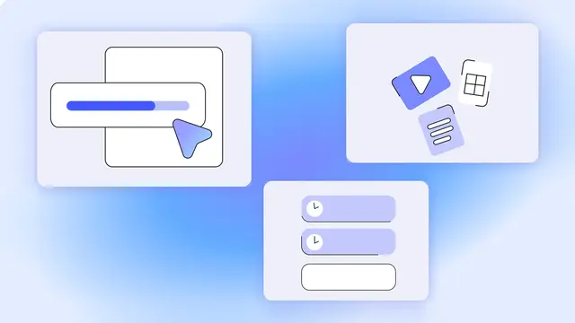

Google / モデル更新
Gemini Notebook、利用上限を刷新 5時間ごと回復の「計算量ベース」方式へ

Googleは2026年8月28日、Gemini Notebookに新しい柔軟な利用上限を導入すると発表しました。従来の単純な回数制限ではなく、処理に必要な計算資源を意識した仕組みに変更し、ユーザーが限られた利用枠をより柔軟に配分できるようにします。一般ユーザー向けアカウントでは9月2日からWebとモバイルで展開されます。
QUICK READ
この記事の要点
利用上限は5時間ごとに更新
大きな変更点は、利用可能量が日次ではなく5時間ごとに更新されることです。これにより、一度上限に達したことでその日の作業を事実上中断する状況を減らし、時間帯をまたいで継続的にNotebookを利用しやすくなります。 既存機能へのアクセス自体は維持され、ユーザーがどの処理に利用枠を使うかを選択しやすくすることが今回の狙いです。
プロンプトの複雑さやソース数も消費量に反映
新方式では、すべての操作を一律に1回として数えるのではなく、処理負荷に応じて利用量が変化します。Googleによると、主に以下の要素が全体の利用上限に影響します。 - プロンプトの複雑さ - チャット履歴の長さ - 使用するソース数 - 利用する機能 つまり、短い質問と、多数の資料を参照して複雑な生成処理を行うタスクでは、同じ1回の操作でも必要な計算資源が異なるという考え方です。生成AIサービスの利用制御を「回数」から「計算コスト」に近い単位へ移行する設計といえます。
重い生成処理は後回しにできる
Notebook側では現在の利用状況を確認できるようになり、希望する出力が上限を超える場合には代替手段も提案されます。 さらに、Video OverviewsやSlide Decksのような計算負荷の高い生成処理については、上限到達時に生成を延期できます。延期した処理は後から自動生成され、完了時に通知を受け取る設定も可能です。 これは、即時性が必要なチャット処理と、大量の計算資源を使うコンテンツ生成を分離して管理する仕組みとして重要です。
Discord掲載記事からの抜粋です。詳細・文脈は全文と出典をご確認ください。
出典・参考リンク
日付はAFNJPへの掲載日です。発表元の公開日とは異なる場合があります。